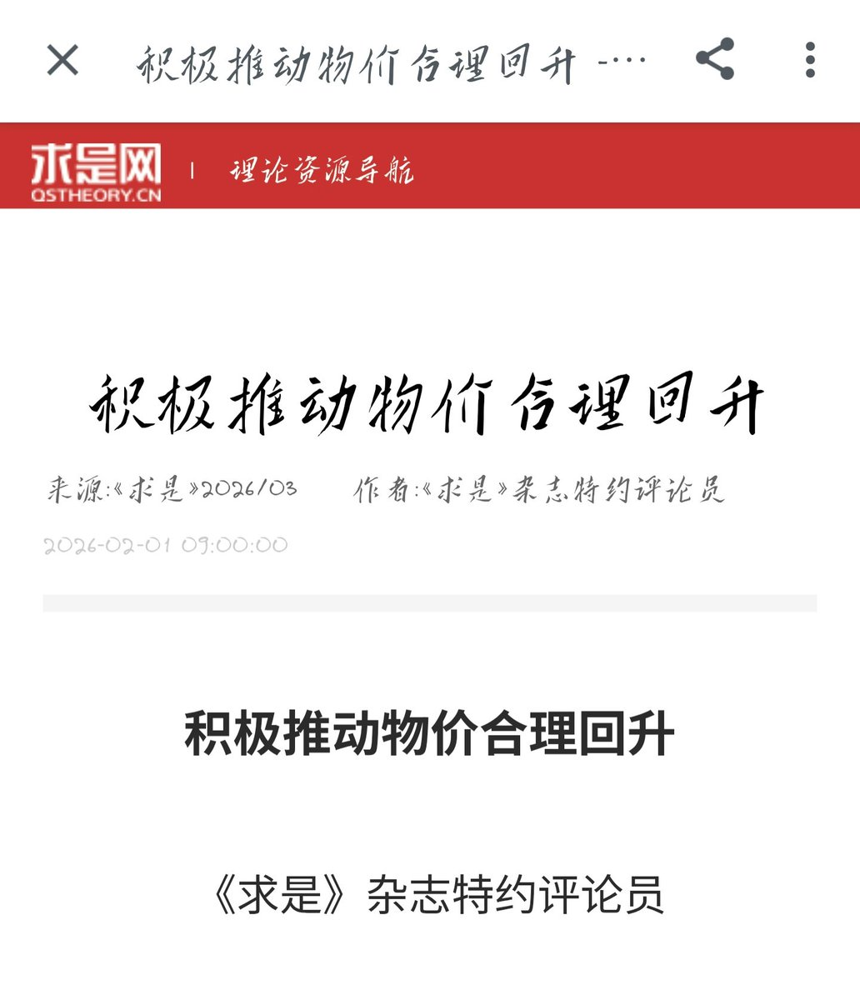

前面提到了国际局势紧张的问题，现有国际局势下最大的受益国无疑是缔造了雅尔塔体系和后冷战体系的美国，中国的制造业要市场，只能是从美国和欧洲手里抢。从大连造船厂的巨型船坞里的那艘巨舰就能看出，目前中国政府对未来局势的决策早已不是据止那么简单，而是一场帝国主义间的决战


战争可能真的要到来了
人民币最近升值是通缩的表现。简单说就是由于国际局势紧张，出口贸易越来越难做，国内制造业出现大量生产过剩现象，导致通缩，而国内从地方政府到民营企业普遍背负着高债务，继续通缩会导致税收不上来,但几十万亿的债不会因为物价下跌而减少,最终就是债务破裂金融系统全面崩溃。 https://t.co/zYHZJDx0yj
人民币最近升值是通缩的表现。简单说就是由于国际局势紧张，出口贸易越来越难做，国内制造业出现大量生产过剩现象，导致通缩，而国内从地方政府到民营企业普遍背负着高债务，继续通缩会导致税收不上来,但几十万亿的债不会因为物价下跌而减少,最终就是债务破裂金融系统全面崩溃。 https://t.co/zYHZJDx0yj